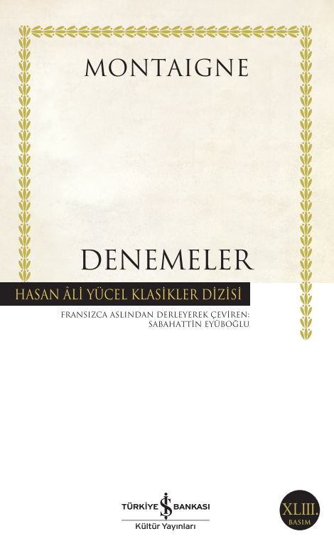

DENEMELER - MONTAIGNE
Edebiyata deneme türünü kazandırmış isimlerin başında olan Montaigne, "Les Essais" (Denemeler) adını verdiği bu eserinde insanlığa değil, kendine mesajlar verdiğini, sadece kendini anlattığını, kendi kendisiyle sohbet ettiğini söyler. Hatta kitaba "Kısacası okuyucu, kitabımın özü “benim”.Boş vakitlerini bu sudan ve anlamsız konuya harcaman akıl karı olmaz. Haydi uğurlar olsun. (Sayfa: 26) ” diyerek sadece kendi deneyimlerini anlattığını baştan vurguluyor.
En alçak gönüllü hali ve mütevazi bir şekilde amacının insanlığa hitap etmek olmadığını, kendi kendisiyle sohbet ettiğini söylese de alttan alta genele mesajlar verir, yol gösterir. Herkesin içinden kendine bir pay çıkarmasını sağla
Deneme türünde yazılmış kitapta 107 yazı, makale bulunuyor. Yayımlandığı günden beri en önemli aydınların, yazarların başucu kitabı olan Denemeler, çoğu felsefe, eğitim konularına değinen ve Ortaçağ dogmantizmini yıkan bir aydınlanma kitabıdır. Montaigne kendi çağının çok ötesinde düşüncelere, fikirlere sahip, ileri görüşlü bir düşünür olduğundan dolayı, hümanist kültürün en önemli kaynaklarından biri sayılan bu kitap 16. yy' dan bu tarihe kadar hala geçerliliğini ve bir başucu referans kitabı olma özelliğini koruyor.
Montaigne, Denemeler kitabına hayatının en zorlu zamanlarını geçirdiği dönemde başlayıp, ölene kadar yazmaya devam etmiştir. Kitaba sürekli olarak yeni yazılar eklemiş ve 3 farklı basıma sebep olmuştur bu da. Tek kitabı olan ve tüm hayatını bu kitabı yazmaya adayan Montaigne " Ben kitabımı yaptığım kadar da kitabım beni yaptı " der.